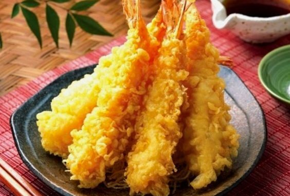

Tempura Shrimp

Description
This is a description of tempura shrimp recipe
i love tempura shrimp because it is crispy
Ingredients:
- 1 lb. large shrimp peeled and deveined
- 1/2 10 oz package tempura batter mix
- Water
- Vegetable oil for frying
Steps:
- Begin making small slits into the inner part of each shrimp. I make about 5 slits for each shrimp. This will help stop the shrimp from curling during frying.
- Mix the tempura batter mix with ice-cold water according to the package.
- Heat vegetable oil in a skillet over high heat.
- Pat the shrimp dry and dip them into the tempura batter. Quickly place it into the hot oil and turn once. Cook each shrimp tempura until golden in color. Remove from hot skillet and transfer to a plate lined with paper towels. Serve the shrimp tempura with low sodium soy sauce or tempura sauce.